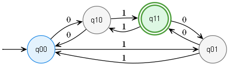
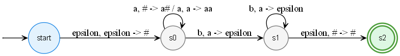
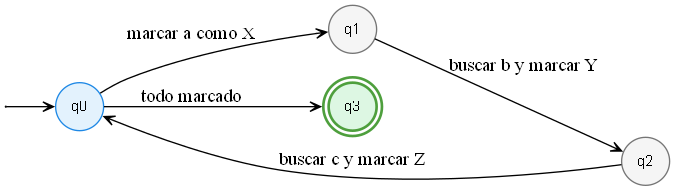
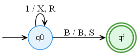

Este archivo muestra las máquinas extra agregadas al proyecto. Cada sección identifica el tipo de máquina, el lenguaje o función que reconoce, una descripción de su funcionamiento, su sintaxis o definición, el gráfico generado con Graphviz y las pruebas ejecutadas.
Tipo: DFA, autómata finito determinista.
Lenguaje: cadenas binarias con número impar de 0's y número impar de 1's.
Estructura: usa cuatro estados: q00, q10, q01 y q11. Cada estado representa si la cantidad de 0's y 1's leídos es par o impar.
Funcionamiento: por cada símbolo leído, el autómata cambia de estado dependiendo de si cambia la paridad de los 0's o de los 1's. Acepta únicamente cuando termina en q11.
Sintaxis / definición de la máquina
Estados: q00, q10, q01, q11 Estado inicial: q00 Estado final: q11 Alfabeto: 0, 1 Lenguaje: Cadenas binarias con numero impar de 0's y numero impar de 1's. Transiciones: q00 con 0 -> q10 q00 con 1 -> q01 q10 con 0 -> q00 q10 con 1 -> q11 q01 con 0 -> q11 q01 con 1 -> q00 q11 con 0 -> q01 q11 con 1 -> q10

AFD: reconoce cadenas con numero impar de 0's y numero impar de 1's 01 -> accepted 10 -> accepted 0011 -> rejected 0101 -> rejected 0 -> rejected 1 -> rejected 00 -> rejected 11 -> rejected epsilon -> rejected 101 -> rejected
Tipo: PDA, autómata con pila.
Lenguaje: L = { a^n b^n | n >= 1 }.
Estructura: usa estados start, s0, s1 y s2, además de una pila con símbolo base #.
Funcionamiento: por cada a leída se apila un símbolo. Al comenzar a leer b, la máquina desapila un símbolo por cada b. Si la cantidad coincide y llega al estado final, acepta.
Sintaxis / definición de la máquina
Estados: start, s0, s1, s2
Estado inicial: start
Estado final: s2
Alfabeto de entrada: a, b
Simbolo inicial de pila: #
Lenguaje:
L = { a^n b^n | n >= 1 }
Transiciones:
start, epsilon, epsilon -> s0, #
s0, a, # -> s0, a#
s0, a, a -> s0, aa
s0, b, a -> s1, epsilon
s1, b, a -> s1, epsilon
s1, epsilon, # -> s2, #

PDA: reconoce a^n b^n ab -> rejected aabb -> rejected aaabbb -> rejected aaaabbbb -> rejected aaab -> rejected bb -> rejected a -> rejected b -> rejected aab -> rejected epsilon -> rejected
Tipo: LBA, autómata linealmente acotado.
Lenguaje: L = { a^n b^n c^n | n >= 1 }.
Estructura: usa una cinta limitada al tamaño de la entrada. Marca a como X, b como Y y c como Z.
Funcionamiento: busca una a, una b y una c para marcarlas como grupo. Repite el proceso hasta que todos los símbolos estén marcados o hasta encontrar un error.
Sintaxis / definición de la máquina
Estados: q0, q1, q2, q3
Estado inicial: q0
Estado final: q3
Cinta limitada: mismo tamano que la entrada
Lenguaje:
L = { a^n b^n c^n | n >= 1 }
Marcas:
a -> X
b -> Y
c -> Z
Funcionamiento:
1. Busca una a y la marca como X.
2. Busca una b y la marca como Y.
3. Busca una c y la marca como Z.
4. Repite el proceso hasta que todo quede marcado.
5. Si no encuentra el orden o cantidad correcta, rechaza.

LBA: reconoce a^n b^n c^n abc -> accepted aabbcc -> accepted aaabbbccc -> accepted aabbc -> rejected abbcc -> rejected aaabbbcc -> rejected abcc -> rejected epsilon -> rejected
Tipo: Máquina de Turing.
Función: transforma todos los símbolos 1 en X.
Estructura: usa una cinta, una cabeza de lectura/escritura, un estado inicial q0, un estado final qf y el blanco B.
Funcionamiento: si lee 1, escribe X y se mueve a la derecha. Si lee B, se detiene en el estado final.
Sintaxis / definición de la máquina
Estados: q0, qf Estado inicial: q0 Estado final: qf Simbolo blanco: B Cinta: entrada + B Funcion: Transforma todos los simbolos 1 en X. Transiciones: q0 lee 1 -> escribe X, mueve R, sigue en q0 q0 lee B -> escribe B, se queda S, pasa a qf

Maquina de Turing: cambia todos los 1 por X 1 -> X 11 -> XX 111 -> XXX epsilon -> epsilon 1111 -> XXXX